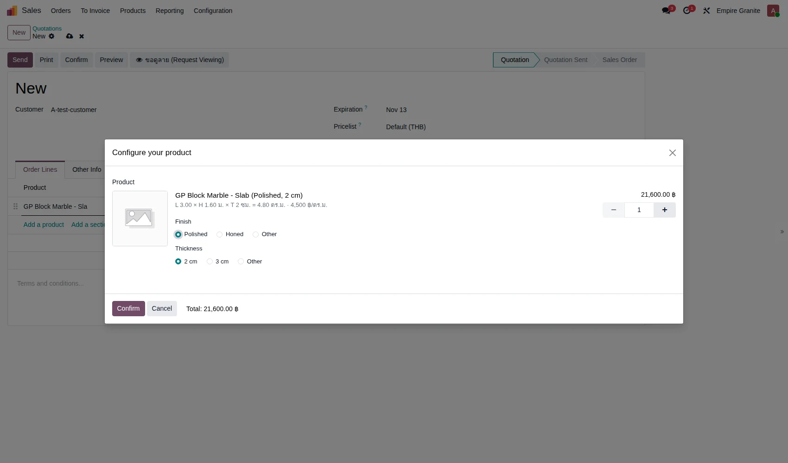
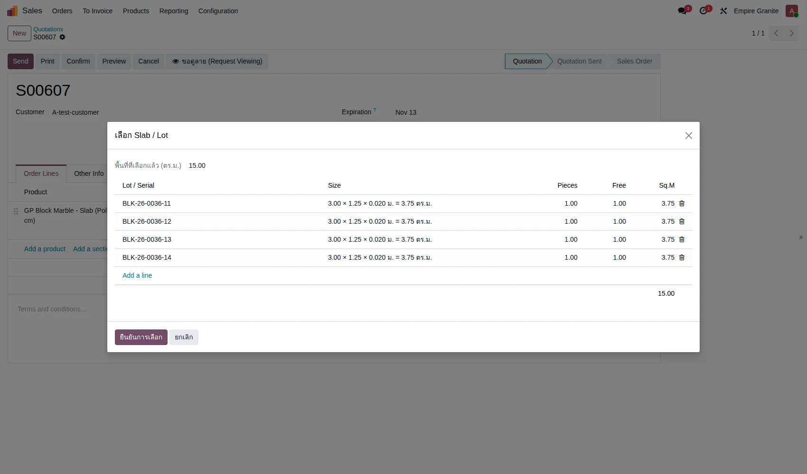
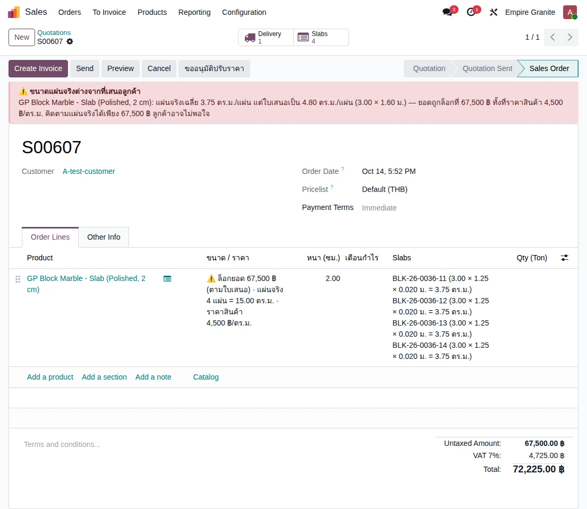

อัปเดตล่าสุด: 25 ตุลาคม 2569 · ตรวจกับระบบ stone_slab_inventory 19.0.2.109.37 และเดินใบเสนอราคาจริงบนระบบทดสอบ eg-tst · เนื้อหาเต็มของ Slab (ซื้อ ตัด ขาย ส่งของ คืนของ) อยู่ที่ บทที่ 31
Flow นี้ใช้เมื่อลูกค้าซื้อแผ่นหินไปติดตั้งเองเลย ไม่ต้องการให้ทางร้านเจาะ/ตัดอะไรเพิ่ม (ถ้าต้องแปรรูปดู บทที่ 05) ผู้ที่เพิ่มบรรทัด Slab ในใบเสนอราคาได้ต้องอยู่กลุ่ม EMG-O Sale - B2B ขึ้นไป
เปลี่ยนจากเดิมแผ่นไม่มีสถานะ Available → Hold แล้ว
ฉบับก่อนหน้าบอกว่า Confirm แล้วแผ่นเปลี่ยนจาก Available เป็น Hold ตอนนี้ Slab เป็น Lot/Serial ของ Odoo (ADR-087) สถานะดูจากตำแหน่งในคลัง ส่วน "แผ่นที่เลือกแล้ว" จะถูกกันไม่ให้ใบสั่งขายอื่นเลือกซ้ำตั้งแต่ตอนเลือก (ยังไม่ต้อง Confirm)
Slab มี 2 โหมด ตั้งที่ Material ของหินชนิดนั้น:
แบบ Serial — เลือกแผ่นทีละแผ่น ราคาตามขนาดจริง
1
Sales → New เลือกลูกค้า → Add a product เลือกสินค้า Slab ของหินชนิดนั้น ในหน้าต่าง Configure your product เลือก Finish และ Thickness แล้วกด Confirm (ถ้าข้ามขั้นนี้ ราคาจะเป็น 0)
2
บรรทัดแสดงขนาดและราคา เช่น "L 3.00 × H 1.60 ม. × T 2 ซม. = 4.80 ตร.ม. · 4,000 ฿/ตร.ม." ยอด 19,200 บาท (ตัวอย่าง Cosmic Black บน eg-tst) แก้ขนาด L, H ได้ที่คอลัมน์ L (ม.) และ H (ม.) ซึ่งซ่อนอยู่เป็นค่าเริ่มต้น เปิดจากปุ่มตั้งค่าคอลัมน์มุมขวาของตาราง
3
กดไอคอนรายการท้ายบรรทัด เลือก Slab / Select Slabs ในหน้าต่างกด Add a line เลือกแผ่นจริงทีละแผ่น แล้วกด ยืนยันการเลือก จำนวนและยอดบนบรรทัดอัปเดตตามพื้นที่แผ่นที่เลือก


แบบ Lot — ขายเป็นแผ่นหรือ ตร.ม. ไม่เลือกรายแผ่น
1
Add a product เลือกสินค้า Slab ของหินที่ตั้งเป็น Lot mode (ตัวอย่างบน eg-tst: DEMO Onyx ราคา 2,000 ต่อแผ่น)
2
ใส่จำนวนเป็นแผ่น หรือเปิดคอลัมน์ Qty (Sq.M) แล้วใส่ ตร.ม. ระบบปัดเป็นแผ่นเต็ม เช่น 10 ตร.ม. = 5 แผ่น × 2,000 = 10,000 บาท
3
เลือกแผ่นที่จะส่งด้วยปุ่ม Select Lot Stock ท้ายบรรทัด
กด Confirm แล้วระบบทำอะไร
1
ล็อกยอดที่ตกลง (Fixed Price, ADR-079) ถ้าแผ่นจริงที่เลือกมีพื้นที่ต่างจากที่เสนอเกิน 5% ขึ้นแถบเตือนสีแดงให้แจ้งลูกค้า (ADR-085) ไม่ห้าม Confirm การลดราคาหลัง Confirm ต้องมีผู้อนุมัติ (ADR-086)
2
สร้างใบส่งของให้อัตโนมัติ (smart button "Delivery") ส่งของต้องสแกน Serial ทุกแผ่น ดู บทที่ 06
3
ถ้ายังไม่มีหินในคลังและไม่มี PO (Serial ที่ยังไม่เลือกแผ่น) ขึ้นหน้าต่าง "Confirm ทั้งที่ยังไม่มีของ" ให้กด Confirm ต่อ ระบบสร้าง Cut Order ฉบับร่างรอไว้ให้และบันทึกข้อความใน chatter ให้สั่งซื้อ Block เพิ่ม

รายละเอียดการแก้ราคา ใบแจ้งหนี้ และรับคืน ดู บทที่ 31 หัวข้อ 4.6–4.9 และ ล็อกราคาหลังยืนยัน